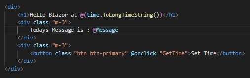
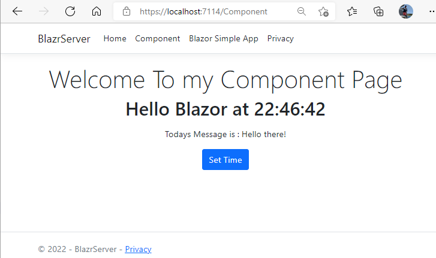

Table of Contents
Building a Blazor App from Scratch
In this article we'll build a Blazor Server Application brick-by-brick from the standard AspNetCore Web Application template.
The purpose of this article is a practical lesson in what Blazor really is and how you can start using it. It should help you understand Blazor more quickly than simply deploying the template and playing with it.
While I'm a firm advocate of Visual Studio, we use Visual Studio code for this exercise to get a bit closer to the coal face.
Prerequesites
- Visual Studio Code
- Net6.0 SDK
To keep things simple all the code and components are in a single namespace Blazr.
Code Repository
You can find all the code in the BlazrServer Github Repository.
Building the Project
Create a Repos folder in Documents (if you don't already have one).
Create a Repos/BlazorServer folder.
Open Visual Studio Code on the folder.
Ctl + 'to open the terminal.
We're ready to deploy a template to the current folder. But which one?
PS C:\Users\shaun\source\repos\BlazrServer > dotnet new --list
Will list all the installed templates.
We're after:
ASP.NET Core Web App webapp,razor [C#] Web/MVC/Razor Pages
To use this:
PS > dotnet new razor
And we get:
The template "ASP.NET Core Web App" was created successfully.
This template contains technologies from parties other than Microsoft, see https://aka.ms/aspnetcore/6.0-third-party-notices for details.
Processing post-creation actions...
Running 'dotnet restore' on C:\Users\shaun\source\repos\BlazorServer\BlazorServer.csproj...
Determining projects to restore...
Restored C:\Users\shaun\source\repos\BlazorServer\BlazorServer.csproj (in 90 ms).
Restore succeeded.
A set of folders and files deployed into the directory.
At this point we can:
PS > dotnet watch run debug
to get this:
PS C:\Users\shaun\source\repos\BlazorServer> dotnet watch run debug
watch : Started
Building...
info: Microsoft.Hosting.Lifetime[14]
Now listening on: https://localhost:7280
info: Microsoft.Hosting.Lifetime[14]
Now listening on: http://localhost:5280
info: Microsoft.Hostingetime[0]
Application started. Press Ctrl+C to shut down.
info: Microsoft.Hosting.Lifetime[0]
Hosting environment: Development
info: Microsoft.Hosting.Lifetime[0]
Content root path: C:\Users\shaun\source\repos\BlazorServer\
And our site.

Make a change to Index.cshtml
<h1 class="display-4">Welcome To my Nascient Blazor App</h1>
and save it. We get:
watch : Exited
watch : File changed: C:\Users\shaun\source\repos\BlazorServer\Pages\Index.cshtml
watch : Started
Building...
info: Microsoft.Hosting.Lifetime[14]
Now listening on: https://localhost:7280
info: Microsoft.Hosting.Lifetime[14]
Now listening on: http://localhost:5280
info: Microsoft.Hosting.Lifetime[0]
Application started. Press Ctrl+C to shut down.
info: Microsoft.Hosting.Lifetime[0]
Hosting environment: Development
info: Microsoft.Hosting.Lifetime[0]
Content root path: C:\Users\shaun\source\repos\BlazorServer\

Hot reload is working. We have a running Razor web application.
To wrap up this section, let's take a quick look at Program.
// Initialise the WebApplication Builder
var builder = WebApplication.CreateBuilder(args);
// Add services to the container.
builder.Services.AddRazorPages();
// Build the App from the builder
var app = builder.Build();
// Configure the HTTP request pipeline.
if (!app.Environment.IsDevelopment())
{
app.UseExceptionHandler("/Error");
app.UseHsts();
}
app.UseHttpsRedirection();
app.UseStaticFiles();
app.UseRouting();
app.UseAuthorization();
app.MapRazorPages();
// Run the Application
app.Run();
This:
- Creates an instance of the
WebApplicationBuilderclass. - Adds a set of services to builder's ServiceCollection. These define the services that can be used by the
WebApplicationinstance's Dependency Injection container. - Builds the
WebApplicationinstance. - Adds a set of Middleware to handle the web request pipeline serviced by the
WebApplicationinstance. - Runs the configured
WebApplicationinstance.
Adding a Blazor Component to a Razor Page
Add a Components folder and a /Component/HelloBlazor.razor component file.
It just displays a message and the time. We use the time so we can easily see if updates happen and when render events occur.
@inherits ComponentBase
@namespace Blazr
<div>
<h1>Hello Blazor at @(time.ToLongTimeString())</h1>
<div class="m-3">
Todays Message is : @Message
</div>
<div class="m-3">
<button class="btn btn-primary" @onclick="GetTime">Set Time</button>
</div>
</div>
@code {
[Parameter] public string Message {get; set;} = string.Empty;
private DateTime time = DateTime.Now;
protected override void OnInitialized()
=> time = DateTime.Now;
private void GetTime()
=> time = DateTime.Now;
}
Add a Component.cshtml to Pages.
@page
@{
ViewData["Title"] = "Component page";
}
<div class="text-center">
<h1 class="display-4">Welcome To my Component Page</h1>
@(await Html.RenderComponentAsync<Components.HelloBlazor>(RenderMode.ServerPrerendered, new { Message = "Hello there!" }))
<script src="_framework/blazor.server.js"></script>
</div>
In _layout.cshtml add a new top menu item:
<li class="nav-item">
<a class="nav-link text-dark" asp-area="" asp-page="/Component">Component</a>
</li>
You should now be able to navigate to Component and see the page render. Click on the button and, nothing happens.
We have a component that is statically rendered by the server. However, there's no Blazor services configured. Open Developer tools and you will see a JS error.

The Server has pre-rendered the component and then passed the generated markup to the browser. What is failing is the Blazor Server JS code. There's no _framework/blazor.server.js to download.
Configuring the Server to run the Blazor Services
First we add the Blazor server-side services. Update Program:
// Add services to the container.
builder.Services.AddRazorPages();
builder.Services.AddServerSideBlazor();
Now check the browser and you will see two errors. blazor.server.js is now available to download, but it can't run because there's no Blazor Hub Middleware running on the server to service the SignalR requests.
Now add the BlazorHub middleware to Program:
app.MapRazorPages();
app.MapBlazorHub();
Everything now runs with no errors. But the button click doesn't work: the time doesn't update!
Go to HelloBlazor.razor and note that VS Code is have trouble recognising @onclick. We need Microsoft.AspNetCore.Components.Web to sort that.

Update HelloBlazor.razor by adding a using to the top of the file.
@inherits ComponentBase
@namespace Components
@using Microsoft.AspNetCore.Components.Web // New

The button now works and updates the time.

We have a Blazor Component running our Razor Server side page. A bit of Deja-Vu for old hands!
Building a Blazor SPA
Components running in a Razor page isn't a Single Page Application. Or is it?
Before we build the full version - as in the Blazor templates - we'll build a very simple SPA.
Add a _Imports.razor file to the project root and add the following code. This sets up the global assemblies for all razor components.
@using System.Net.Http
@using Microsoft.AspNetCore.Authorization
@using Microsoft.AspNetCore.Components.Authorization
@using Microsoft.AspNetCore.Components.Forms
@using Microsoft.AspNetCore.Components.Routing
@using Microsoft.AspNetCore.Components.Web
@using Microsoft.AspNetCore.Components.Web.Virtualization
@using Microsoft.JSInterop
Add a Routes folder to the project and add the following razor components:
/Routes/Index.razor
@namespace Blazr
<PageTitle>Index</PageTitle>
<h1>Hello, world!</h1>
Welcome to your new app.
/Routes/Counter.razor
@namespace Blazr
<PageTitle>Counter</PageTitle>
<h1>Counter</h1>
<p role="status">Current count: @currentCount</p>
<button class="btn btn-primary" @onclick="IncrementCount">Click me</button>
@code {
private int currentCount = 0;
private void IncrementCount()
=> currentCount++;
}
/Routes/Hello.razor
@namespace Blazr
<HelloBlazor></HelloBlazor>
Add an Apps folder and add:
/Apps/BaseApp.razor
@using Microsoft.AspNetCore.Components;
@using Microsoft.AspNetCore.Components.Rendering;
@using Microsoft.AspNetCore.Components.Web;
@namespace Blazr
<nav class="navbar navbar-expand-lg navbar-light bg-light">
<div class="container-fluid">
<h2 class="navbar-brand">Blazor Simple App</h2>
<div class="collapse navbar-collapse" id="navbarSupportedContent">
<ul class="navbar-nav me-auto mb-2 mb-lg-0">
<li class="nav-item">
<a class=" btn nav-link" @onclick='() => this.ChangeRootComponent("Index")'>Index</a>
</li>
<li class="nav-item">
<a class="btn nav-link" @onclick='() => this.ChangeRootComponent("Counter")'>Counter</a>
</li>
<li class="nav-item">
<a class="btn nav-link" @onclick='() => this.ChangeRootComponent("Hello")'>Hello</a>
</li>
<li class="nav-item">
<a class="btn nav-link " @onclick="this.GoServerIndex">Server Home</a>
</li>
</ul>
</div>
</div>
</nav>
<div class="ms-5">
@body
</div>
@code {
[Inject] private NavigationManager? NavManager { get; set; }
private Dictionary<string, Type> Routes => new Dictionary<string, Type> {
{"Index", typeof(Blazr.Index)},
{"Counter", typeof(Blazr.Counter)},
{"Hello", typeof(Blazr.Hello)}
};
private Type rootComponent = typeof(Blazr.Index);
private RenderFragment body => (RenderTreeBuilder builder) =>
{
builder.OpenComponent(0, rootComponent);
builder.CloseComponent();
};
public void ChangeRootComponent(string route)
{
if (Routes.ContainsKey(route))
{
rootComponent = Routes[route];
StateHasChanged();
}
}
public void GoServerIndex()
=> this.NavManager?.NavigateTo("/Index", true);
}
rootComponent is the Type of component to render: the default is Index.razor. The Nav bar calls ChangeRootComponent which changes rootComponent and requests a component re-render by calling StateHasChanged.
body is a RenderFragment that simply adds rootComponent to the render tree and renders it. In practice we would check that rootComponent implements IComponent: all components must implement IComponent. I haven't implemented the code to keep things simple and easy to read.
GoHome uses the NavigationManager to trigger a full browser reload, and thus loads the default server page.
Add a link to _Layout.cshtml
<li class="nav-item">
<a class="nav-link text-dark" asp-area="" asp-page="/SimpleBlazor">Blazor Simple App</a>
</li>
Add /Pages/SimpleBlazor.cshtml
@page
@{
Layout = null;
}
<!DOCTYPE html>
<html lang="en">
<head>
<meta charset="utf-8" />
<meta name="viewport" content="width=device-width, initial-scale=1.0" />
<title>@ViewData["Title"] - BlazorServer</title>
<link rel="stylesheet" href="~/lib/bootstrap/dist/css/bootstrap.min.css" />
<link rel="stylesheet" href="~/css/site.css" asp-append-version="true" />
<link rel="stylesheet" href="~/BlazorServer.styles.css" asp-append-version="true" />
</head>
<body>
@(await Html.RenderComponentAsync<Blazr.BaseApp>(RenderMode.ServerPrerendered))
<script src="_framework/blazor.server.js"></script>
</body>
</html>
You should now be able to navigate to the Simple App, and navigate between the top menu bar links.

Section Summary
We've created a server side razor page, loading a Blazor component as it's main content. This component consists of a navigation bar and a sub-component. Clicking on the links in the navigation bar just change out the sub-component. StateHasChanged queues a re-render of the page on the Renderer's queue. The Renderer runs the render (in reality a RenderFragment that represents the page), works out any differences between the old DOM and the new DOM, and passes those to the browser to update the browser displayed DOM. No page navigation involved, just DOM changes.
Building a Full Blazor Server App
Adding files from the Repo
We need to add some files from the Blazor application.
Add a /Routes/Shared folder and add the following files from the Repo:
- MainLayout.razor
- MainLayout.razor.css
- NavMenu.razor
- NavMenu.razor.css
These are the standard files from the Blazor Template with the namespace set and the NavLinks tweaked.
Add the following file to wwwroot/css
- blazor-site.css
This is the standard Blazor site file renamed.
App Component
Add /Apps/App.razor and add the out-of-the-box code.
@namespace Blazr
<Router AppAssembly="@typeof(App).Assembly">
<Found Context="routeData">
<RouteView RouteData="@routeData" DefaultLayout="@typeof(MainLayout)" />
<FocusOnNavigate RouteData="@routeData" Selector="h1" />
</Found>
<NotFound>
<PageTitle>Not found</PageTitle>
<LayoutView Layout="@typeof(MainLayout)">
<p role="alert">Sorry, there's nothing at this address.</p>
</LayoutView>
</NotFound>
</Router>
Routing
For routing to work, we need to add router page attributes to components we want the Router to treat as routes.
Update the following components, adding a page route. A component can have more than one route.
Routes/Index.razor
@page "/"
@page "/App"
......
Routes/Counter.razor
@page "/Counter"
......
Routes/Hello.razor
@page "/Hello"
......
Razor Server-Side Pages
Add /Pages/Shared/_AppLayout.cshtml.
This is the Blazor Server launch page, with a tweeked stylesheet setup.
@using Microsoft.AspNetCore.Components.Web
@namespace Layouts
@addTagHelper *, Microsoft.AspNetCore.Mvc.TagHelpers
<!DOCTYPE html>
<html lang="en">
<head>
<meta charset="utf-8" />
<meta name="viewport" content="width=device-width, initial-scale=1.0" />
<base href="~/" />
<link rel="stylesheet" href="~/lib/bootstrap/dist/css/bootstrap.min.css" />
<link href="css/blazor-site.css" rel="stylesheet" />
<link href="BlazorServer.styles.css" rel="stylesheet" />
<component type="typeof(HeadOutlet)" render-mode="ServerPrerendered" />
</head>
<body>
@RenderBody()
<div id="blazor-error-ui">
<environment include="Staging,Production">
An error has occurred. This application may no longer respond until reloaded.
</environment>
<environment include="Development">
An unhandled exception has occurred. See browser dev tools for details.
</environment>
<a href="" class="reload">Reload</a>
<a class="dismiss">🗙</a>
</div>
<script src="_framework/blazor.server.js"></script>
</body>
</html>
Add /Pages/App.cshtml.
This is the Blazor App launch page. We specify Blazor.App as the launch class i.e. App.razor.
@page
@addTagHelper *, Microsoft.AspNetCore.Mvc.TagHelpers
@{
Layout = "_AppLayout";
}
<component type="typeof(Blazr.App)" render-mode="ServerPrerendered" />
Navigation Changes
Update /Routes/Shared/NavMenu.razor
Add a new NavLink.
<div class="nav-item px-3">
<NavLink class="btn nav-link" @onclick="GoServerIndex">
<span class="oi oi-list-rich" aria-hidden="true"></span> Server Home
</NavLink>
</div>
And add the GoServerIndex method to "hard" navigate to the server-side home page.
public void GoServerIndex()
=> this.NavManager?.NavigateTo("/Index", true);
Web Changes
Add a new link to the main page navigation in /Pages/Shared/_Layout.cshtml.
<li class="nav-item">
<a class="nav-link text-dark" asp-area="" asp-page="/App">Blazor App</a>
</li>
Add a Fallback page endpoint to Program. All fallbacks are directed to the Blazor Application.
//.....
app.MapBlazorHub();
app.MapFallbackToPage("/App");
app.Run();
You should now be able to navigate to the application and F5 to reload it.
Section Summary
We now have a full blown Blazor Server application running with routing. It's important to differentiate between Blazor Routing and Browser Navigation. One way to physically detect the difference is to watch the "Refresh" button in the toolbar - the circle next to the forward button. You can see it activate when you have a browser navigation event.
Routing occurs when you click the left Nav Menu in the Blazor application. You may be clicking on an anchor, but the browser event is intercepted by the Blazor Javascript code, and received by the Router component. It has a dictionary of Routes/Component - built by finding all the components with an @page attribute in the current assembly. It looks up the component against the route, and loads the new component. We created a very simple version of this in the Simple Blazor component.
Setting the Blazor App as Default
The current setup has an Index.cshtml page with no @page set. This is the default page for the site https://localhost:nnnnn/.
If there is a Blazor route component set as @page "/" why doesn't it use it? This is where calling Blazor components with a route attribute "Pages" causes confusion. Don't call them anything but a page: Routes, RouteComponents or RouteViews. The web server knows nothing about the Blazor Routes. The request runs through the configured middleware pipeline in Program. In our setup app.MapRazorPages() maps the Razor pages in Pages to the web route. If it finds an index or default web file it uses it.
To understand what's happening look at the endpoint mapping in Program
app.MapRazorPages();
app.MapBlazorHub();
app.MapFallbackToPage("/App");
app.Run();
The current Index.cshtml is considered a default page and MapRazorPages() returns it.
To change our setup, set the page attribute on Index.cshtml.
@page "/index"
@model IndexModel
MapRazorPages now maps Index.cshtml to https://localhost:nnnnn/Index and no longer treats it as a default page.
The request hits app.MapFallbackToPage("/App") which returns App.cshtml our Blazor App startup page.
Navigation within a Blazor App
So what happens if we have a link in the Blazor App that navigates to the web server Index? We can see this NavMenu.
If we were to code GoServerIndex like this:
public void GoServerIndex()
=> this.NavManager?.NavigateTo("/Index");
Blazor treats the request as local so routes, rather than navigates. The router can't find a route match so displays it's "Sorry, there's nothing at this address." message.
To "hard" navigate we need to do this:
public void GoServerIndex()
=> this.NavManager?.NavigateTo("/Index", true);
This forces the NavigationManager to navigate, not route.
Summary
There are a few tweeks I've made that make my implementation different from the out-of-the-box template. These are:
- I've removed FetchData, it just complicates things.
- The App
NavMenupoints Index to /App and not /. - Index.razor has an added
@page "/App". - All the Blazor Pages components are now in Routes.
2 and 3 fix the "default page problem" i.e. the default page is the server razor file, not the Blazor Application.